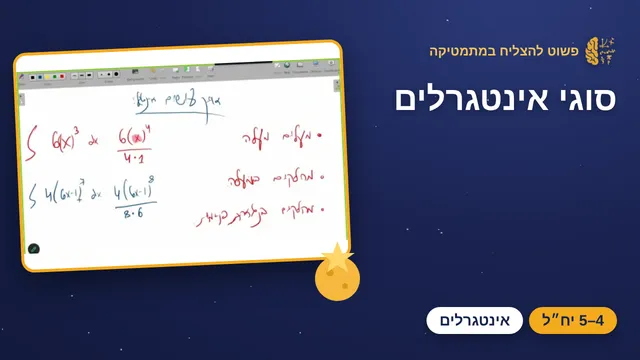
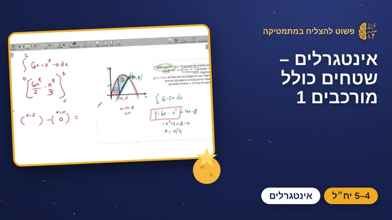
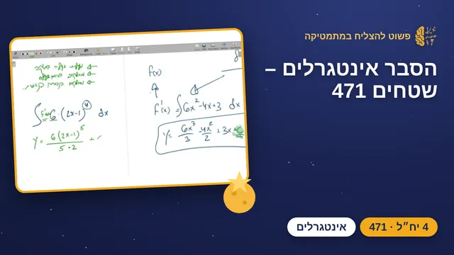
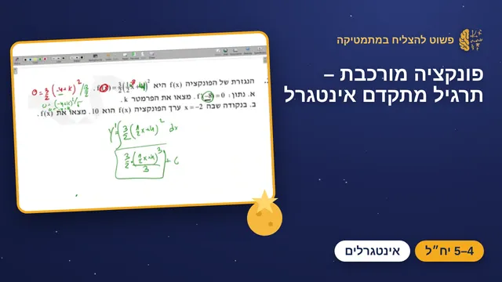
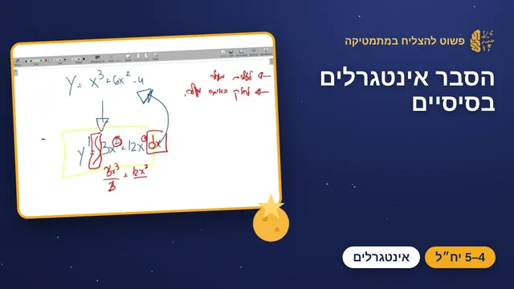
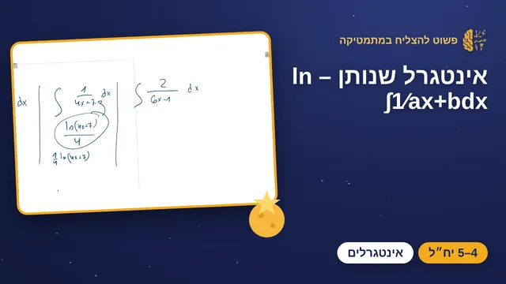
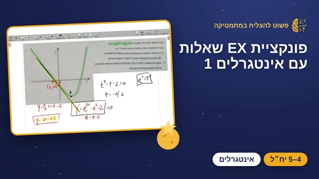
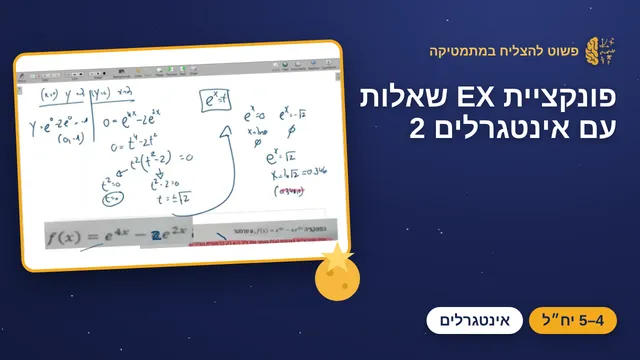
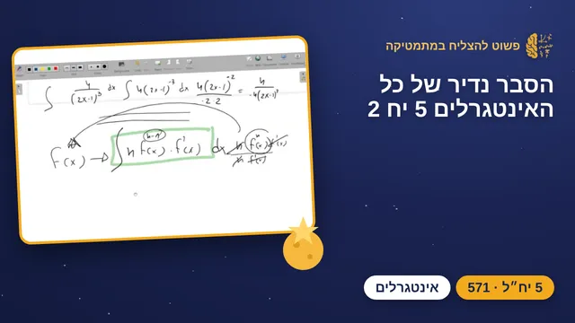
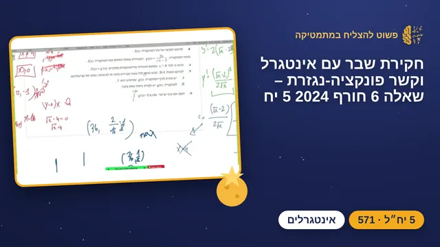

פשוט להצליח במתמטיקה › כל הנושאים › אינטגרלים
אינטגרלים – סרטוני הסבר ותרגול
58 סרטוני הסבר ותרגול בנושא אינטגרלים – לשאלון 471, שאלון 472, שאלון 571, שאלון 572. כל נושא מוסבר מהקל אל הקשה: קודם הרעיון, אחר כך תרגילים, ובסוף שאלות בסגנון בגרות. הכול בחינם, בשיטת "פשוט להצליח".
רוצים לעקוב אחרי ההתקדמות?נרשמים בחינם, וכל סרטון שראיתם מסומן ✓. ממשיכים מכל מכשיר.
הצטרפות בחינם ←אינטגרלים – שאלון 471 כל הנושאים של שאלון 471 ←
 מציאת פונקציה מהנגזרת (שורש) ובעיית קיצון במשולש
מציאת פונקציה מהנגזרת (שורש) ובעיית קיצון במשולש אינטגרל של פונקציה מורכבת 4 יח
אינטגרל של פונקציה מורכבת 4 יח מציאת פונקציה מהנגזרת – משיק ופרמטר, f′(x)=(1−x)∕√(−x²+2x+a)
מציאת פונקציה מהנגזרת – משיק ופרמטר, f′(x)=(1−x)∕√(−x²+2x+a) פונקציה וקדומה – g′(x)=f(x), טבלת קשר בין פונקציה לנגזרת
פונקציה וקדומה – g′(x)=f(x), טבלת קשר בין פונקציה לנגזרת אינטגרל פונק שטח מפוצל
אינטגרל פונק שטח מפוצל
סוגי אינטגרלים איך עושים אינטגרל מההתחלה עד הסוף 4 5 יח
איך עושים אינטגרל מההתחלה עד הסוף 4 5 יח חקירת פונקציית שבר עם אינטגרל של נגזרת שאלון 471 4 יחחקירת פונקציית שבר עם אינטגרל של נגזרת שאלון 471 4 יח 2
חקירת פונקציית שבר עם אינטגרל של נגזרת שאלון 471 4 יחחקירת פונקציית שבר עם אינטגרל של נגזרת שאלון 471 4 יח 2
אינטגרלים – שטחים כולל מורכבים 1
הסבר אינטגרלים – שטחים 471 אינטגרלים – שטחים כולל מורכבים 2
אינטגרלים – שטחים כולל מורכבים 2 פונקציה מורכבת – אינטגרל
פונקציה מורכבת – אינטגרל
פונקציה מורכבת – תרגיל מתקדם אינטגרל
הסבר אינטגרלים בסיסיים תרגיל לדוגמה – אינטגרל עם משיק לפונקציה
תרגיל לדוגמה – אינטגרל עם משיק לפונקציה אינטגרלים – למצוא את הפונקציה הקדומה, שאלות בסיס 3
אינטגרלים – למצוא את הפונקציה הקדומה, שאלות בסיס 3 אינטגרלים – למצוא את הפונקציה הקדומה, שאלות בסיס 2
אינטגרלים – למצוא את הפונקציה הקדומה, שאלות בסיס 2 אינטגרלים – למצוא את הפונקציה הקדומה, שאלות בסיס 1
אינטגרלים – למצוא את הפונקציה הקדומה, שאלות בסיס 1 פעולת האינטגרל – איך עושים ומה המשמעות
פעולת האינטגרל – איך עושים ומה המשמעות הסבר אינטגרלים – מהות, משמעות ולמהחקירת שבר – סיכום קשר פונקציה-נגזרת עם אינטגרל יא 4 יח 481חקירת פונקציה עם קשר פונקציה-נגזרת ואינטגרל – חזרה לפונקציה המקורית 4 יח 481אינטגרל עם משיקים ושטח מחולק – הסבר ושאלה פתורה 481
הסבר אינטגרלים – מהות, משמעות ולמהחקירת שבר – סיכום קשר פונקציה-נגזרת עם אינטגרל יא 4 יח 481חקירת פונקציה עם קשר פונקציה-נגזרת ואינטגרל – חזרה לפונקציה המקורית 4 יח 481אינטגרל עם משיקים ושטח מחולק – הסבר ושאלה פתורה 481 אינטגרל של פונקציית נגזרת – הסבר ושאלת בגרות 481אינטגרלים – חזרה לפונקציה המקורית, פולינום ומורכבת 481 יא – פתרון שאלותאינטגרלים – חזרה לפונקציה המקורית, פולינום ומורכבת 481 יא – הסבר כל החומר
אינטגרל של פונקציית נגזרת – הסבר ושאלת בגרות 481אינטגרלים – חזרה לפונקציה המקורית, פולינום ומורכבת 481 יא – פתרון שאלותאינטגרלים – חזרה לפונקציה המקורית, פולינום ומורכבת 481 יא – הסבר כל החומר קיץ 2019 מועד א שאלה 7 481 – חקירת פונקציה עם אינטגרל
קיץ 2019 מועד א שאלה 7 481 – חקירת פונקציה עם אינטגרלאינטגרלים – שאלון 472 כל הנושאים של שאלון 472 ←
 מציאת פונקציה מהנגזרת f′x=3−e⁻ˣ⁺² ומשיק
מציאת פונקציה מהנגזרת f′x=3−e⁻ˣ⁺² ומשיק
אינטגרל שנותן ln – ∫1∕ax+bdx איך גוזרים ואיך עושים אינטגרל לפונקציית EX פשוט וקל
איך גוזרים ואיך עושים אינטגרל לפונקציית EX פשוט וקל דוגמה חיה של אינטגרל מורכב של EX
דוגמה חיה של אינטגרל מורכב של EX תרגיל בגרות EX כולל אינטגרל 482
תרגיל בגרות EX כולל אינטגרל 482
פונקציית EX שאלות עם אינטגרלים 1
פונקציית EX שאלות עם אינטגרלים 2 שאלת בגרות 482 EX עם אינטגרל וסעיף חכם 4 יח
שאלת בגרות 482 EX עם אינטגרל וסעיף חכם 4 יח אינטגרלים תרגילים לדוגמה EX שטח יב 4 יח שאלון 482 1
אינטגרלים תרגילים לדוגמה EX שטח יב 4 יח שאלון 482 1 אינטגרלים תרגילים לדוגמה EX שטח יב 4 יח שאלון 482 2שאלת EX – חקירה עם אינטגרל 482 שאלת בגרותחקירת ln עם אינטגרל כולל שאלת בגרות
אינטגרלים תרגילים לדוגמה EX שטח יב 4 יח שאלון 482 2שאלת EX – חקירה עם אינטגרל 482 שאלת בגרותחקירת ln עם אינטגרל כולל שאלת בגרותאינטגרלים – שאלון 571 כל הנושאים של שאלון 571 ←
מציאת פונקציה מהנגזרת (שורש) ובעיית קיצון במשולשמציאת פונקציה מהנגזרת – משיק ופרמטר, f′(x)=(1−x)∕√(−x²+2x+a)פונקציה וקדומה – g′(x)=f(x), טבלת קשר בין פונקציה לנגזרתאינטגרל פונק שטח מפוצלסוגי אינטגרלים
הסבר נדיר של כל האינטגרלים 5 יח 2 קשר בין שלושת הגרפים כולל אינטגרל מיוחד 571איך עושים אינטגרל מההתחלה עד הסוף 4 5 יחעוד אינטגרל ברמת 5 יחעוד אינטגרל 5 יח המתוקיםאינטגרלים מהבסיס עד רמה גבוהה ביותר 5 יח 2אינטגרלים מהבסיס עד רמה גבוהה ביותר 5 יח 5אינטגרלים מהבסיס עד רמה גבוהה ביותר 5 יח 1אינטגרלים מהבסיס עד רמה גבוהה ביותר 5 יח 4
קשר בין שלושת הגרפים כולל אינטגרל מיוחד 571איך עושים אינטגרל מההתחלה עד הסוף 4 5 יחעוד אינטגרל ברמת 5 יחעוד אינטגרל 5 יח המתוקיםאינטגרלים מהבסיס עד רמה גבוהה ביותר 5 יח 2אינטגרלים מהבסיס עד רמה גבוהה ביותר 5 יח 5אינטגרלים מהבסיס עד רמה גבוהה ביותר 5 יח 1אינטגרלים מהבסיס עד רמה גבוהה ביותר 5 יח 4 אינטגרלים מהבסיס עד רמה גבוהה ביותר 5 יח 3אינטגרלים – שטחים כולל מורכבים 1אינטגרלים – שטחים כולל מורכבים 2פונקציה מורכבת – אינטגרלפונקציה מורכבת – תרגיל מתקדם אינטגרלהסבר אינטגרלים בסיסייםתרגיל לדוגמה – אינטגרל עם משיק לפונקציה
אינטגרלים מהבסיס עד רמה גבוהה ביותר 5 יח 3אינטגרלים – שטחים כולל מורכבים 1אינטגרלים – שטחים כולל מורכבים 2פונקציה מורכבת – אינטגרלפונקציה מורכבת – תרגיל מתקדם אינטגרלהסבר אינטגרלים בסיסייםתרגיל לדוגמה – אינטגרל עם משיק לפונקציה 571 שאלה 1 שאלות קצרות – קשר בין פונקציה לנגזרת ואינטגרלאינטגרלים – למצוא את הפונקציה הקדומה, שאלות בסיס 3אינטגרלים – למצוא את הפונקציה הקדומה, שאלות בסיס 2אינטגרלים – למצוא את הפונקציה הקדומה, שאלות בסיס 1פעולת האינטגרל – איך עושים ומה המשמעות
571 שאלה 1 שאלות קצרות – קשר בין פונקציה לנגזרת ואינטגרלאינטגרלים – למצוא את הפונקציה הקדומה, שאלות בסיס 3אינטגרלים – למצוא את הפונקציה הקדומה, שאלות בסיס 2אינטגרלים – למצוא את הפונקציה הקדומה, שאלות בסיס 1פעולת האינטגרל – איך עושים ומה המשמעות חקירות שבר ושורש 581 כולל אינטגרלים שאלה 6 2
חקירות שבר ושורש 581 כולל אינטגרלים שאלה 6 2 חקירות שבר ושורש 581 כולל אינטגרלים שאלה 6 3
חקירות שבר ושורש 581 כולל אינטגרלים שאלה 6 3 חקירות שבר ושורש 581 כולל אינטגרלים שאלה 6 1הסבר אינטגרלים – מהות, משמעות ולמהאינטגרל ברמת 5 יח – הסבר ושאלת בגרותחקירת שבר עם שורש 5 יח 581 עם אינטגרל – שאלה פצצה
חקירות שבר ושורש 581 כולל אינטגרלים שאלה 6 1הסבר אינטגרלים – מהות, משמעות ולמהאינטגרל ברמת 5 יח – הסבר ושאלת בגרותחקירת שבר עם שורש 5 יח 581 עם אינטגרל – שאלה פצצה
חקירת שבר עם אינטגרל וקשר פונקציה-נגזרת – שאלה 6 חורף 2024 5 יחפונקציה צוברת שטח 581 – הסבר החומר ותרגילים פתורים 1פונקציה צוברת שטח 581 – הסבר החומר ותרגילים פתורים 2אינטגרלים – שאלון 572 כל הנושאים של שאלון 572 ←
מציאת פונקציה מהנגזרת f′x=3−e⁻ˣ⁺² ומשיקאינטגרל שנותן ln – ∫1∕ax+bdxאיך גוזרים ואיך עושים אינטגרל לפונקציית EX פשוט וקלדוגמה חיה של אינטגרל מורכב של EXפונקציית EX שאלות עם אינטגרלים 1פונקציית EX שאלות עם אינטגרלים 2חקירת ln עם אינטגרל כולל שאלת בגרות